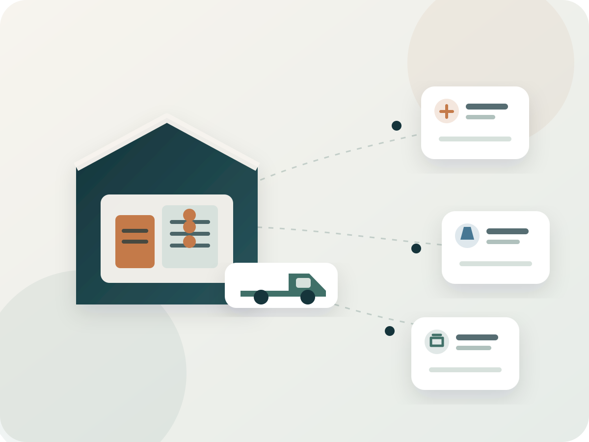

مسارات تجارية موثوقة حول المنتجات المناسبة.
بناء علاقات أكثر وضوحًا بين المنتج والمورد والقناة من خلال معلومات قابلة للمراجعة ومسار تجاري مفهوم قبل الالتزام.
ORIGEX Trading Demo نموذج تجريبي لشركة تجارة وتوزيع أغذية تعمل حول فئات مختارة وفرص منتجات وموردين منظمة، بهدف توضيح كيف يمكن بناء مسار تجاري واضح من المصدر إلى السوق.

يركز نموذج ORIGEX على فئات غذائية مختارة وعلاقات منظمة مع المصنعين والعلامات والموردين. تبدأ الصورة من بيانات المنتج والشركة والفئة، ثم تُربط بمسار بيع أو توزيع أو فرصة سوق مناسبة.
الدور هنا تجاري ومرتبط بفرصة فعلية؛ ليس خدمة استشارات عامة. بدء النقاش أو إرسال منتج لا يعني تلقائيًا قبول المنتج أو استيراده أو توزيعه أو تمثيله.

بناء علاقات أكثر وضوحًا بين المنتج والمورد والقناة من خلال معلومات قابلة للمراجعة ومسار تجاري مفهوم قبل الالتزام.
نبدأ من معلومات الشركة والمنتج والفئة والفرصة، ثم نحدد ما إذا كان هناك مسار تجاري مناسب وما الذي يحتاجه قبل التنفيذ.
نربط مناقشة المنتج بواقع القناة والفرصة: نفهم الشركة والمنتج، نراجع المعلومات والملاءمة، ثم نحدد الخطوة التجارية التالية دون افتراض أن كل منتج سيتحول إلى اتفاق.
شركة · منتج · فئة · فرصة
مراجعة المعلومات · تقييم الملاءمة · تحديد المسار
فرصة · قناة · طلب · خطوة تالية
تبدأ المراجعة من بيانات الشركة والمنتج والفئة والفرصة قبل اتخاذ خطوة تجارية.
إرسال منتج أو بدء نقاش لا يعني تلقائيًا قبولًا أو استيرادًا أو توزيعًا.
الأسعار والكميات والنطاق وأي التزامات تجارية تُحدد في الاتفاق المناسب قبل التنفيذ.
لا تُفهم المناقشة كوكالة أو حصرية أو تمثيل رسمي إلا إذا تم الاتفاق والتوثيق صراحة.
انتقل إلى مكتبة الموارد لعرض الملفات والمواد التي تساعد على فهم الشركة أو الفرصة.
استعرض المنتجات التجريبية أو استخدم مسار تقديم المنتج لبدء مراجعة معلومات منظمة.
جميع الأسماء والبيانات التجارية الواردة في العرض التوضيحي أمثلة خيالية لأغراض القالب، ويجب استبدالها ببيانات فعلية قبل النشر.